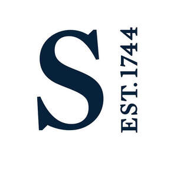

Trade Mark Journal No.2025/029 18 July 2025
UK00004231411 9 July 2025 (9,16,33,35,36,41,42)

- Class 9
- Downloadable computer software for use in the field of auctions; downloadable computer software for use in the field of auctions, namely, mobile software applications containing information relating to fine and decorative art, antique and collectible articles and other valuable personal property sold at auction; downloadable computer software that enables users to view, bid on and purchase items sold at auction; downloadable electronic publications in the nature of magazines in the fields of fine and decorative art, antique and collectible articles and other valuable personal property, entertainment, culture, lifestyle, and luxury living.
- Class 16
- Books, catalogues and brochures, magazines, bulletins and newsletters concerning fine and decorative art, antique and collectible articles and other valuable property; printed matter, including magazines, postcards and greeting cards in the fields of entertainment, culture, lifestyle and luxury living; gift bags; shopping bags of paper or plastic.
- Class 33
- Collectible wines and distilled spirits; alcoholic cocktails.
- Class 35
- Auction services; online auction services; retail store services featuring fine and decorative art, antique and collectible articles and other valuable personal property; art dealership services; providing information concerning auctions of fine and decorative art, antique and collectible articles and other valuable personal property; formation, maintenance and exploitation of a register of property (other than real estate); taxation consultation; administrative processing of orders in connection with services featuring books and catalogs concerning fine furniture and decorative art, antique and collectible articles, and other valuable property, and rendered by mail; marketing and advertising; business management; business administration; office functions; electronic data storage; advertising services provided via the Internet; auctioneering; trade fairs; opinion polling; data processing; provision of business information.
- Class 36
- Art brokerage services; valuation and appraisal of fine and decorative art, antique and collectible articles and other valuable personal property; financial services; financial services, namely, providing loans to others relating to the purchase of fine and decorative art, antique and collectible articles and other valuable personal property; advancement of funds to others for fine and decorative art, antique and collectible articles and other valuable personal property consigned for sale at auction; providing loans to others secured by fine and decorative art, antique and collectible articles and other valuable personal property not intended for sale; valuation services; insurance brokerage and insurance underwriting relating to goods; arranging loans against security; provision of loans; financial guarantees; financial consultancy; estate agency services; financial and real estate services; appraisal services for others for fine furniture, fine and decorative art, jewelry, stamps, coins, books and other valuable property; electronic funds transfer, processing of debit card and credit card payments.
- Class 41
- Art exhibition services; art gallery services; education; providing of training; entertainment; cultural activities services; publishing for others; exhibitions of fine and decorative works of art, jewelry, stamps, coins, books, antiques and other valuable personal property; educational services, namely displays, exhibits and seminars in the field of art; education and training services relating to works of art, furniture and antiques; correspondence courses; providing online publications in the nature of magazines in the fields of fine and decorative art, antique and collectible articles and other valuable personal property, entertainment, culture, lifestyle, and luxury living; entertainment in the nature of providing an informational and entertainment website in the fields of fine and decorative art, antique and collectible articles and other valuable personal property, entertainment, culture, lifestyle, and luxury living; entertainment services in the nature of development, creation and production of multimedia entertainment content in the fields of fine and decorative art, antique and collectible articles and other valuable personal property, entertainment, culture, lifestyle, and luxury living distributed via various platforms across multiple forms of transmission media.
- Class 42
- Providing temporary use of online non-downloadable software for use in the field of auctions; providing temporary use of online non-downloadable software for use in the field of auctions, namely, software applications containing information relating to fine and decorative art, antique and collectible articles and other valuable personal property sold at auction; providing temporary use of online non-downloadable software that enables users to view, bid on and purchase items sold at auction; providing temporary use of online non-downloadable software that enables users to view multimedia entertainment content in the fields of fine and decorative art, antique and collectible articles and other valuable personal property, entertainment, culture, lifestyle, and luxury living; research, advice and authentication services relating to the age, provenance, history and value of works of art, antiques and of furniture.
Sotheby's
Representative: CMS Cameron McKenna Nabarro Olswang LLP